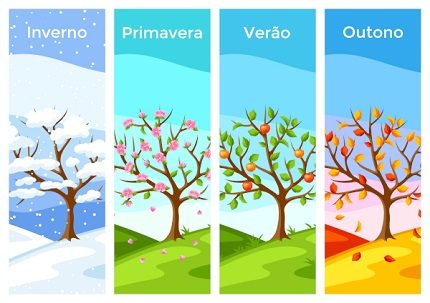

Três Irmãs
As Três Irmãs são os três principais cultivos agrícolas da cultura nativa dos Estados Unidos, que são: Abóbora de Inverno(um tipo de abóbora) Milho, e Feijão.
Em uma técnica conhecida como Plantação de companhia, os três cultivos eram plantados bem juntos. Montes de topos achatados no solo era construídos para cada cultivo.[1] Cada monte tinha 30 centímetros de altura e 50 centímetros de largura, e muitas sementes de milho eram plantadas perto uma da outra. Em partes do Norte atlântico, peixe podre ou enguias eram queimados nos montes com as sementes, para agir como fertilizantes adicionais onde o solo era pobre.[2] quando o milho estava com 15 cm (6 pés) de altura, o feijão e a abóbora eram plantados ao redor do milho, alternando entre os dois tipos de sementes. O processo para lançar esse conhecimento agrícola ocorreu a mais de 6,500 anos. Primeiro, as abóboras eram tratadas, depois os milhos e os feijões.[3][4] a abóbora foi tratada pela primeira vez a 8,000 ou 10,000 anos atrás.[5][6]
As três sementes beneficiavam uma as outras. O milho fornecia estrutura aos feijões para se sustentar, eliminando a necessidade de paus. Os feijões forneciam nitrogênio para o solo para que outras plantas o usassem, e a abóbora se propagava pelo chão, bloqueando a luz do sol, que ajudaria na criação de Ervas-Daninhas. a abóbora atuava como um "bagaço vivo", criando um microclima para reter a umidade no solo. O milho também produz amino ácidos como lisina e triptofano, que o corpo humano precisa para proteínas como niacina, mas os feijões contem ambos e milho e feijão juntos produzem uma dieta balanceada.[3][4]
Os Nativos Americanos durante toda a América do Norte são conhecidos por cuidarem de muitos jardins de três irmãs.[7] Os milpas da Mesoamérica são fazendas ou jardins que empregam a plantação em larga escala.[8] Os Anasazi são conhecidos por adotarem essa prática em um ambiente mais seco. Os Tewa e outros povos do sudoeste dos Estados Unidos geralmente incluíam uma "quarta irmã" conhecida como "Planta Abelha das Montanhas rochosas" (Cleome serrulata), que atrai abelhas para ajudar a polinizar os feijões e as abóboras.[9]

Estações do Ano
As estações do Ano.
Todo mundo já sabe que durante o ano ocorrem quatro estações: Primavera, verão, outono e inverno.
As estações do ano acontecem por causa da inclinação da terra em relação ao sol. O movimento do nosso planeta em torno do sol, dura um ano. Esse movimento recebe o nome de translação e a sua principal conseqüência é a mudança das estações do ano.
Se a Terra não se inclinasse em seu eixo, não existiriam as estações. Cada dia teria 12 horas de luz e 12 horas de escuridão. E como o eixo do planeta terra forma um ângulo com seu plano orbital, existe o verão e o inverno, dias longos e dias curtos. Durante o Verão, os dias amanhecem mais cedo e as noites chegam mais tarde. Ao longo dos três meses desta estação, o sol se volta, lentamente para a direção norte e os raios solares diminuem sua inclinação. No início do Outono, os dias e as noites têm a mesma duração: 12 horas. Isso é porque a posição do sol está exatamente na linha do Equador.
Porém, o sol, vai continuar se distanciando aparentemente para norte. A partir daí, os raios solares atingem o mínimo de inclinação no início do Inverno, e, ao contrário do Verão, os dias serão mais curtos e as noites mais longas.
Então, o Sol vai começar a se deslocar na direção sul. Começando então a Primavera e os dias e as noites terão a mesma duração.
Portanto, as estações do ano e a inclinação dos raios solares variam com a mudança da posição da Terra em relação ao Sol. Quando o Pólo Norte se inclina em direção ao Sol, o hemisfério Norte se aquece ao calor do verão. Seis meses mais tarde, a Terra percorreu metade de sua órbita. Agora o Pólo Sul fica em ângulo na posição do Sol. É verão na Austrália e faz frio na América do Norte.
Outono : De 21 de março a 21 de junho
Do latim: autumno. Também conhecido como o tempo da colheita, pois é nesta época que ocorrem as grandes colheitas. Os dias ficam mais curtos e mais frescos. As folhas e frutas, já estão bem maduras e começam a cair no chão. Os jardins e parques ficam, coberto de folhas de todos os tamanhos e cores.
Isto por que os países lá do hemisfério norte precisam se preparar para o inverno que está chegando. É necessário armazenar bastante comida para nada possa faltar!

Inverno: De 21 de junho a 23 de setembro
Do latim: hibernu, tempus hibernus, tempo hibernal. Associado ao ciclo biológico de alguns animais ao entrar em hibernação e se recolherem durante o período de frio intenso. Estação que sucede o Outono e antecede a Primavera.
O inverno é a estação mais fria do ano. Os dias são curtos e por isso escurece mais cedo.
No sul do Brasil é comum ver a neve cair, cobrindo o chão e as plantas. Já nas outras regiões como São Paulo e Rio de Janeiro, é a chuva quem dá o ar da sua graça.
Como a temperatura cai nessa fase, as pessoas tendem a passar mais tempo dentro de casa, principalmente debaixo das cobertas!
Primavera: De 23 de setembro a 21 de dezembro.
Do latim: primo vere, no começo do verão.
Ah, essa é a estação mais florida do ano! Representa a época primeira, a estação que antecede o Verão.
Com o fim do inverno, os voltam a ser mais longos e quentes. Este é o período em que os animais se reproduzem e constroem seus ninhos. Os insetos como as borboletas e abelhas, voam de flor em flor em busca néctar que as flores possuem.
A temperatura não é tão baixa e nem tão alta fazendo da primavera uma época muito agradável.
Verão: De 21 de dezembro a 21 de março.
Do latim vulgar: veranum, veranuns tempus, tempo primaveril ou primaveral.
Chegou o Verão, a estação mais quente do ano. Muito calor e dias bem longos. As temperaturas estão lá em cima. Relativo a primavera. Estação que sucede a Primavera e antecede o Outono.
As árvores estão verdes e carregadas de frutas. Neste período a Terra recebe mais chuva por causa da vaporização das águas. O céu fica, ás vezes, fica nublado com pesadas nuvens que são o acúmulo de águas dos rios e dos mares transportadas para a atmosfera em forma de vapor.
O verão é uma estação muito gostosa, com a chegada das férias e um clima de alegria no ar.